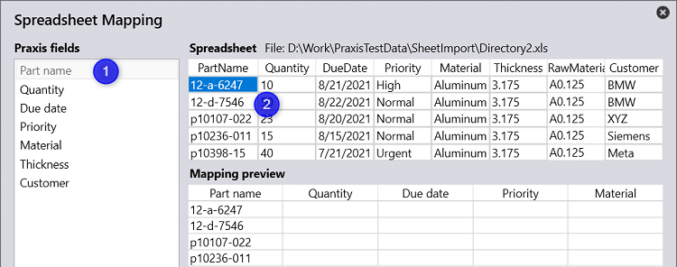

To map spreadsheet, first click on one of the Praxis fields (say Part name) followed by a spreadsheet cell under the desired column in the right to create the mapping between the Praxis and Spreadsheet columns. The mapping preview is updated in the bottom to reflect the mapping result. The mapped field is grayed-out to reflect the mapping status. Double click the grayed-out, mapped field to un-map. Click on a mapped field and click another spreadsheet column to alter the mapping. Repeat this all-required Praxis fields to complete the mapping.
Type-in the mapping name and press Save button to save the mapping. The saved mapping settings are synchronized across all stations and are used by Praxis by-default when spreadsheet is imported the next time.
Note: Sometimes the spreadsheet uses the raw material (material + thickness) to define the part material. Therefore, the Thickness field mapping is optional, and the mapping can be skipped in those cases. Following schemas are currently supported while importing spreadsheet.
The mapping exercise explained above can used to create multiple such mappings for different spreadsheet formats. When a spreadsheet is dropped, Praxis compares the spreadsheet schema (the column definitions) with the saved mapping and uses the matching one to import the spreadsheet. Hold the Ctrl key when the spreadsheet is dropped to load and edit the existing mapping. Praxis launches the mapping dialog. Click on the Praxis field to highlight the column it is mapped to. Use the steps mentioned in the previous section to modify and save the mapping.
Schema 1
PartName, Quantity, DueDate, Priority, RawMaterial
038521~5, 2, 8/21/2016, Normal, STEEL#10
●
Schema 2
PartName, Quantity, DueDate, Priority, Material, Thickness
038521~5, 2, 8/21/2016, Normal, DC01, 2